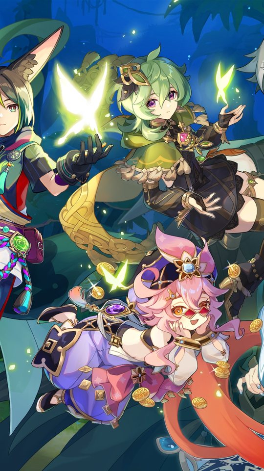
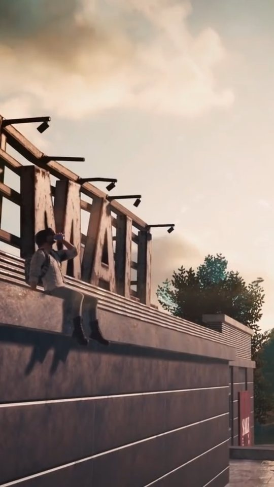
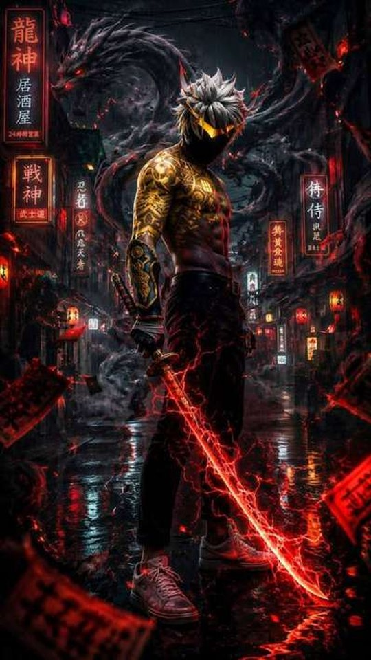
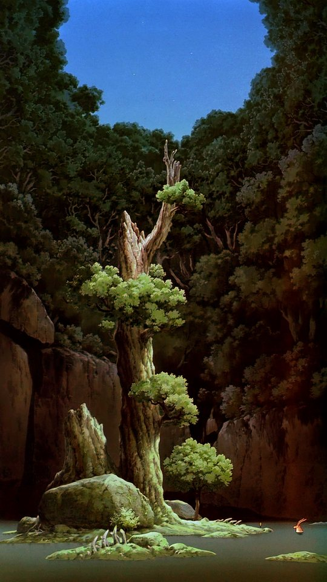

Anime & gaming wallpapers
Wallpapers that actually look good on your phone
Anime & gaming wallpapers, explained. Character art breakdowns, cropping advice and honest game write-ups — no clickbait, no thin filler.
Latest articles
20 posts
My Hero Academia Wallpapers: From Deku to All Might
My Hero Academia is one of the boldest-looking anime on television, and that boldness is exactly what makes it work as a phone wallpaper. This guide looks…

Anime Gacha Games Worth Your Storage Space
Gacha games are easy to install and hard to judge, because the thing that makes them good or bad only shows up after you have played for a week. This…

Naruto vs Boruto: Which Characters Make Better Wallpapers?
Naruto and Boruto are set in the same world but drawn in two very different visual languages, and that difference shows up the moment you put them side by…

Minecraft Anime Skins: A Practical Guide
Anime skins are one of the most popular ways to customise a Minecraft character, but the process trips people up because Java and Bedrock handle skins…

One Piece Wallpapers: Ranking the Straw Hats by Art Quality
One Piece has been running long enough that its artwork has passed through several distinct looks, and that range is exactly what makes it such a rich…

How Anime Wallpaper Apps Work — and How to Pick a Good One
This guide explains how wallpaper apps actually fetch and store the images you see, then gives you a checklist for judging whether a particular app is…
More from the blog
Archive
10 Best Anime Games on Android in 2026
There are more anime-style games on Android than anyone can reasonably try, so this list focuses on ten that are worth a look, with a plain reason to play…

Attack on Titan Wallpapers: The Most Iconic Scenes and How to Use Them
Attack on Titan looks different from most anime wallpapers, and that difference is exactly what makes it work. This guide covers the most recognisable…

Anime Art Styles Explained: Cel-Shading, Digital Painting and AI Art
This guide explains the main art styles you will see in anime wallpapers, namely cel-shading, digital painting, watercolour and AI-generated work, and how…

BGMI Wallpapers: The Best Weapon and Character Art
BGMI gives players an enormous amount of visual material to work with: weapon skins, character outfits and detailed maps. This guide looks at what…

Chainsaw Man Wallpapers: Denji, Pochita and the Art That Works Best
Chainsaw Man has one of the boldest colour identities in modern anime, and that makes it both a gift and a trap for wallpapers. This guide covers Denji,…

How to Crop and Optimise an Anime Wallpaper Without Ruining It
This guide covers the practical rules for cropping an anime image into a phone wallpaper without cutting off the parts that matter. It explains where to…

Wuthering Waves Wallpapers: Hsin, Carlotta and the Rest
Wuthering Waves has a distinctive visual identity, and its official character art is unusually well suited to portrait phone screens. This guide looks at…

Solo Leveling Wallpapers: Sung Jin-Woo's Best Art, Ranked
Solo Leveling is one of the few series whose art was designed to look best on a screen, which makes it a natural fit for phone wallpapers. This guide…

Why 1080×1920 Matters: An Anime Wallpaper Resolution Guide
This guide explains how phone screen resolution and aspect ratio affect how an anime wallpaper looks once it is set. You will learn how to find your own…

Free Fire Wallpapers: Characters, Skins and What Actually Looks Good
A good Free Fire wallpaper is not simply a screenshot of your favourite character standing in the lobby. This guide looks at which Free Fire characters…

Demon Slayer Wallpapers: Every Hashira Ranked for Your Lock Screen
Demon Slayer is a show built on colour, and that makes it unusually good material for a phone wallpaper. This guide ranks all nine Hashira, plus Tanjiro…

How to Set a Live Wallpaper on Android (Step by Step)
This guide walks you through setting a live wallpaper on any modern Android phone, including the differences between Samsung, Xiaomi, Pixel and OnePlus…

Genshin Impact Wallpapers: Best Characters for Your Home Screen
Genshin Impact has one of the most consistent art styles in gaming, and its elemental system gives every character a built-in colour theme you can build a…

Jujutsu Kaisen Wallpapers: The Best Characters for Your Phone
A phone wallpaper has to survive being glanced at dozens of times a day, so it needs to read clearly at a small size and in a hurry. This guide works…
Want the wallpapers without the hunting?
AniPix is a free Android app with thousands of HD anime wallpapers, live wallpapers and daily updates.
Get the AniPix app